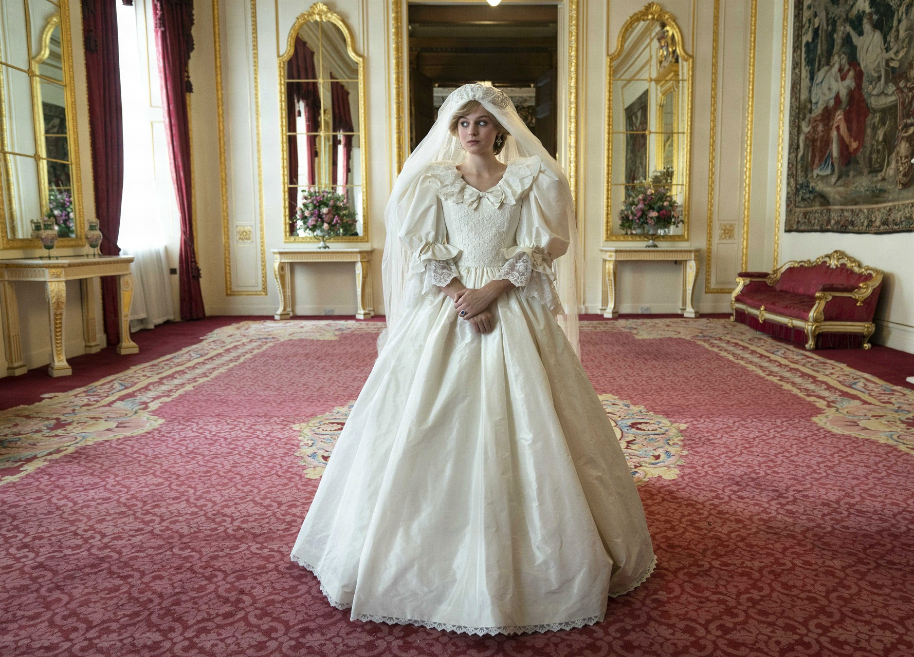

"Fairytale"
Castello di Windsor 1981, Carlo chiama Elizabeth e le dice che ha fatto la proposta a Diana, ecco la scena iniziale della terza puntata, Diana intenta a rientrare nella sua umile dimora a Earl's Count, viene "bombardata" dalla stampa. Inizia la sua vita da principessa, e Diana comincia con il dover scegliere l'anello per il matrimonio, dinanzi agli occhi attenti e critici della Regina, la quale chiede a Lady Fermoy di "insegnare"a Diana come essere una reale. Finisce la vita normale di Diana, che lascia l'appartamento con le sue amiche, e dà vita alla sua vita da palazzo. Già dai primi incontri, emerge l'inadeguatezza di Diana alla vita da palazzo che si evince dal saluto che rivolge a tutti i Reali, il giorno successivo si ufficializza il loro fidanzamento, l'espressione di Carlo e le risposte alle domande dei giornalisti iniziano a far preoccupare Diana. Se l'amore tra i due sembra non decollare, a decollare è sicuramente la popolarità della principessa, che riceve una serie di lettere calorose da parte dei sostenitori. Carlo è via per un programma, e mancherà per 6 settimane Diana, la noia inizia a farsi sentire, ed ecco che l'unico rifugio a queste giornate piene di rabbia e tristezza, dopo i vari rifiuti da parte della Regina e dei segretari di Carlo, è il cibo, per la prima volta nella serie evincono i problemi alimentari della principessa. Camilla, sotto invito di Carlo, incontra Diana, le due amiche-nemiche "pranzano" assieme, e si nota l'impreparazione della principessa su Carlo, e quanto effettivamente Camilla sia più "adatta" a Carlo, e alla vita da palazzo. Come al solito, la principessa trova riparo nel dessert, che viene divorato, e prontamente rigurgitato, il matrimonio tra Carlo e Diana, è un matrimonio finito prima ancora di iniziare. Inizia a farsi spazio nella mente di Diana l'idea che questo matrimonio non debba verificarsi, e difatti parla con la regina, ciò porterà Carlo ad ammettere i vari incontri con Camilla, durante il matrimonio di prova Margaret, sorella della Regina, nota le incomprensioni tra i due, e l'infelicità di entrambi, cerca in ogni modo di convincere Sua Maestà ad annullare il matrimonio... senza riuscirci. L'episodio termina con le parole "rassicuranti" della regina, all'appello di Carlo, il quale si rende conto che è ormai troppo tardi per annullare tutto, la scena si conclude con le lacrime di Carlo.
Scritto da Francesco Carini.